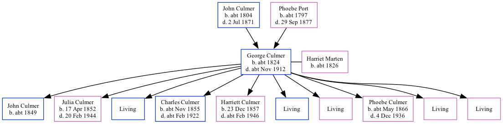

George Culmer c1824 - c1912 [ Home ] | [ Calendar ] | [ Surnames Index ] | [ Family History ]The child of John Culmer and Phoebe Port George Culmer , the three times great-uncle of Nigel Horne , was born in Hoath, Kent, England c. 18241,2 and married Harriet Marten (with whom he had 10 children: John , Julia , George , Charles , Harriett , Frederick , Alice , Phoebe Ann , Louisa and Emma , along with 5 surviving children) at Ss Cosmus & Damian, Blean, Kent, England on Dec 14, 18513 . Like his father, he was an agricultural laborer.
Throughout his life, George lived in several places: in Blean on Jun 6, 18415 ; at St Thomas Hill, Canterbury, Kent on Apr 7, 18611 ; and on Sheldwich Road, Preston, Faversham, Kent on Apr 2, 18714 .
He died c. Nov 1912 in Bridge, Kent, England2 .
Parents John was born c. 1804Phoebe was born c. 1797Children John was born c. 1849Julia was born on Apr 17, 1852Charles was born c. Nov 1855Harriett was born on Dec 23, 1857Phoebe Ann was born c. May 1866Citations 1861 England, Wales & Scotland Census - Findmypast (was age 32 and the head of the household) England & Wales deaths 1837-2007 - Findmypast Kent, Canterbury Archdeaconry marriages 1538-1928 - Findmypast 1871 England, Wales & Scotland Census - Findmypast (was age 45 and the head of the household) 1841 England, Wales & Scotland Census - Findmypast (was age 13) Media England & Wales deaths 1837-2007 - BMD/D/1912/4/AZ/000184/110 England & Wales marriages 1837-2008 - BMD/M/1851/4/AH/000514/039 Kent, Canterbury Archdeaconry marriages 1538-1928 - GBPRS/CANT/M/97034201/1 1841 England, Wales & Scotland Census - GBC/1841/0013915023 Family Tree Interactive Map
Map
Generated by ged2site . Last updated on Feb 18, 2025